15 мая 2018 года Грига анонсирует игру постом в фейсбуке. 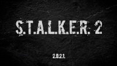
В тот же день Галёнкин палит инфу по движку.
29 мая 2018 года в подкасте «Как делают игры» Галёнкин поделился инсайдерской информацией о том, что игру не планировали анонсировать — Григорович сделал это, ни с кем не советуясь. Также он рассказал, что игры нет и разработка находится на стадии диздоков. Наверняка мы этого знать не можем, но позже некоторые заявления подтвердятся.
12 июня 2018 года появляется вакансия на технического артиста. Среди прочих требований было "Портфолио\веб-сайт, демонстрирующий технические художественные способности, которые включают работу на основе Unreal". Примерно через две недели часть про Unreal удалили из вакансии. 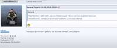
28 марта 2019 года обновляют сайт, на котором присутствует два арта. Я подчёркиваю: первых два официальных арта по S.T.A.L.K.E.R. 2 за всё время. И что мы получили?
Первый, оказывается, рисовался для говномода Noises of the zone, 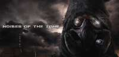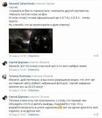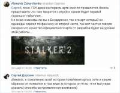
а второй является вообще стоп-кадром с какого-то популярного муз-клипа на Youtube. Его же и удаляют с сайта, когда это узнают люди. — Двойной обсёр. 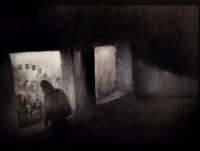
Сам клип (момент на 2:28):
18 августа 2019 года сотрудники GSC, в составе около 10-12 человек, с ног до головы обвешанные мерчем S.T.A.L.K.E.R. 2, посетили Gamescom в Кёльне. За пару дней до поездки в своих инстаграм-страничках недвусмысленно намекали о том, что «будет интересно». Все, кто хоть сколько-то следил за новостями, сидели у экранов до самого завершения трансляции. Не увидев ничего относящегося к S.T.A.L.K.E.R. 2, ждуны устроили бунт на официальном сервере в дискорде, после чего некто под ником Angrymoderator в ту же ночь, включив режим Аршавина, написал огромную простыню текста о том, что они ничего никому не обещали, и если кто-то недоволен, то это его проблемы. Канал был заблокирован примерно на сутки, а десятки юзеров забанены.
31 декабря 2019 года эпики сливают движок. Захарка пару дней мнётся, и потом ПЫС признаются, что это правда. — Обсёр.
12 января 2020 года в посте про фотограмметрию указывают версию движка — UE4.
13 мая 2020 года эпики анонсируют UE5, и вдруг ПЫСы заявляют, что "мы не знаем версию движка сталкера". Попытка нагнать тайны, а по факту обсёр, потому что UE4.
23 марта 2020 года, в годовщину ТЧ, выкладывают первый официальный скриншот S.T.A.L.K.E.R. 2. Скриншот не ингейм, всё вокруг переднего плана обмазано мылом так, что вся сцена выглядит, как диорама. — Обсёр.
Весь шифр сплошной обсёр на каждом его этапе. И как вершина этого обсёра: шифр разгадали с помощью гугла, никто из победителей не разгадал последнюю часть, этот сайт просто выдавало в гугле. — МЕГАОБСЁР длиной в полтора года.
23 июля 2020 года на презентации микромягких показали первый официальный трейлер S.T.A.L.K.E.R. 2. Трейлер не ингейм: опять все задники замылены, все сцены — диорамы, артефакт светится аки жопа фанатов, электра сделана из спрайтов с гугла, анимация сталкера у Дуги выглядит будто из мультика Пиксар — не просто обсёр, а настоящий позор. После этого трейлера КМы заявляли, что "год ещё не окончен" и "нам ещё есть чем вас удивить". Время шло, год заканчивался, а удивления не было. Все начали шутить, что инфа будет 31-го декабря в 23:59. Как оказалось, они были почти правы.
Также в трейлере был обнаружен отрывок поэмы «Катерина» за авторством Тараса Шевченко, где фигурировало слово «Москаль». Многие в защиту разработчиков говорили, что это просто дань уважения великому автору. Но разве колба с мутантом в жёлтой жиже — это подходящее место для такого? 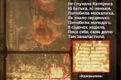
И даже если разработчики не закладывали сюда скрытого смысла (выбрав именно этот фрагмент, а не любой другой), то это в любом случае обсёр, так как чёрный пиар на сраче; а такой проект, как S.T.A.L.K.E.R. 2, не нуждается в этом. Захар пробует себя в грязных играх. Усвоен урок или нет — увидим во втором трейлере.
В ночь на 30-31 декабря 2020 года на канале IGN выкатывают первый In-Engine Gameplay Teaser (что бы это не значило). В ролике длиной 54 секунды нам демонстрируют пролёт камеры по полуразрушенному крылу школы из ЗП. Оценивать этот тизер довольно сложно, потому что, по большому счёту, оценивать тут нечего, особенно что это опять НЕ ИНГЕЙМ.
Также в конце 2020 года ПЫСы активизируются по выдаче призов за "разгадку" шифра, а также узнают у сталкер-блогеров их размеры, чтобы выслать мерч. Посылки ожидаются в январе 21-го.
После получения посылок начнётся второй шифр, который, скорее всего, будет подвязан на пиар-кампанию к игре.
Слито руководство по наименованию файлов 3D моделей 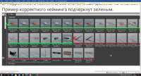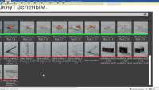
Точнее, потом они это называли даже ARG, но, видимо, не загуглили, что это значит.
О том, что 2.0.2.1. — это шифр, долго никто и не знал.
28 декабря 2018 года мистер Антишнапс выпустил ролик, где рассказал, что ему один из подписчиков прислал скрин переписки с GSC о том, что 2.0.2.1. — это шифр (момент на 1:01):
Переписка датировалась 29 мая. Возможно, что эту переписку сделали сами ПЫСы, потому что никто не разгадывал их "шифр".
По сути, разгадка шифра и началась 28 декабря 2018-ого, после ролика шнапса.
ЧАСТЬ 1
25 января 2019-го ПЫСам была отправлена разгадка первой части (2021-1986), которую человек получил, просто перебирая, складывая и отнимая числа — то есть, на рандоме. Он сам об этом впоследствии и рассказал. Никакого смысла тут нет, но все понадеялись на то, что дальше будет лучше (нет). 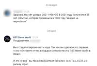
6 февраля 2019 года ПЫСы ему ответили во ВКонтакте и сказали, что он прав, и выкатили пост о том, что первая часть разгадана, тем самым предложив всем разгадывать следующую часть. Тут же стоит отметить, что, начиная именно с 6 февраля, за этот шифр всерьёз взялось довольно много людей, потому что до этого дня про существование шифра знали только те, кто видел ролик Антишнапса.
С этого дня организовалось несколько конф в ВК, и люди начали гадать, непрерывно отсылая ПЫСам версии, и на каждую версию они получали в ответ "это не ведет к следующей части" и так далее. Хотя следующую часть невозможно было разгадать без обновления сайта, потому что на нём была морзянка. Но ПЫСов это не парило, ведь можно продолжать дурить головы людям.
21 февраля 2019 года они вообще всех запутали, ответив, что ASCII — это правильное направление (впоследствии абсолютно нет), из-за чего немало людей на ней свихнулись.
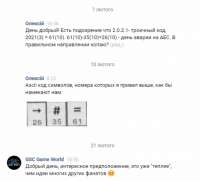
Ответ: 35
ЧАСТЬ 2
28 марта 2019 года внезапно они решили обновить сайт, создать дискорд-сервер (на котором впоследствии будут перлы про песочного человека), а также группу ВК. На сайте появился арт (изначально рисовавшийся для мода Noises of the zone) и один трек. В треке была морзянка, которую расшифровали в тот же вечер.
Не знаю, слышит ли меня кто-нибудь.
Но это неважно, я привык к одиночеству.
Я больше не боюсь.
Зона дала всему смысл.
Мне нужно дождаться.
Естественно, эту морзянку начали слать ПЫСам, которые или не думали, что её так быстро расшифруют, или просто не придумали следующую часть шифра. В этом и кроется главная проблема: никто нихера не понимал, что из себя должна представлять вторая часть и сколько их всего. Никакой логической связи с первой частью в итоге не оказалось. Перепробованы были буквально сотни, может даже тысячи теорий. На всё ПЫСы отвечали — нет. Причём иногда ответа на теорию приходилось ждать месяцами.
Именно эта часть и подтверждает, что ПЫСы сделали этот шифр для затяжки времени. Во-первых, потому, что в ней нет никакой логики и связи с предыдущей (и следующей) частью, а во-вторых, чтобы узнать, правильная твоя версия или нет, нужно было писать им сообщение и ждать неделю/месяц-два ответа (таким образом, они полностью контролировали момент разгадки). Тогда же у нормисов среди дешифровщиков начали появляться догадки о том, что ПЫСы тянут время и шифра нет, и они просто выберут понравившеюся теорию.
Так и произошло.
11 февраля 2020 года, больше чем через ГОД после разгадки первой части, они, видимо, решили, что пора разжигать интерес, и засчитали вторую часть. Теория, которую они засчитали, настолько бредовая, насколько это вообще, блять, возможно. Человек представил фразы из морзянки в виде тире и точек (не спрашивайте почему) и решил, что "--..." с морзе — это цифра 7, и прислал её ПЫСам, которые, по сути, ему и подсказали про азот. Это такой бред, что даже описать я это не могу. Какой, нахер, АЗОТ? Почему? В чём смысл? Как связан текст морзянки и АЗОТ? Никак, никакого смысла. Просто вот так. Человек абсолютно притянуто за уши прислал им цифру 7, а они ему подсказали, что это нужно сопоставить с элементом в таблице Менделеева. Опять же, смысла — ноль.
Без этой подсказки НЕВОЗМОЖНО было бы предположить, что ответ на вторую часть — это БУКВА, да ещё и латинская.
От себя добавлю, что мне тоже засчитали ответ на эту часть, якобы я шел правильным путём (а не шизоидным, как расписал выше). По версии ПЫС, правильная разгадка второй части — это сложить точки и тире (156 точек и 149 тире), ВЫЧЕСТЬ из первого второе и получить цифру 7. И после этого я почему-то должен был догадаться, что цифра семь — это N = АЗОТ.
Короче, абсолютно шизоидный бред, который они притянули не то чтобы "за уши", а я даже не знаю за что.
Ответ: N
ЧАСТЬ 3
На следующий день, 12 февраля 2020 года, на сайте появилось окно для ввода текста, куда нужно было написать "ключ-фразу". Какую ключ фразу? С чем она должна быть связана? Наверное, с предыдущими частями шифра? Ведь ПЫСы тысячу раз говорили, что всё связано, да? А вот хуй там.
Через пару часов вбивания всего подряд в это окно в дискорде один из челиков абсолютно на рандоме ввёл в это окно название ачивки из ЗП, которая звучит как "Хранитель тайн". Почему он ёё ввёл? Почему он вообще решил ввести в окно название ачивки, притом что предыдущие части разгадывались арифметически? Просто так, на рандоме, о чём сам тогда же и сказал. Никакого смысла в этом нету. Никакой логикой разгадка не подкреплена. Впоследствии окажется, что к этой ачивке мы должны были придти через Азота (персонажа), мол, каноничное (что?) прохождение квеста с беспилотником не через Новикова, а именно через Азота. Автор этой версии про каноничность прохождения — небезызвестный Рок Пескович. Вот так, имея Букву N (взятую с потолка), мы должны были понять, что в сайт нужно вводить название АЧИВКИ, блять (я до сих пор в шоке).
После ввода названия ачивки в браузере открывалась фотография с кучей предметов и бумажек. Сразу скажу, что в метаданных фотки была дата создания — 15 декабря 2019 года, то есть эта часть была придумана за два месяца до разгадки, а не два года назад.
Но есть небольшая деталь — они изначально вообще не ту версию, что нужно, залили, на которой нельзя было рассмотреть записку, например. То есть если бы человек не сидел на этом сервере и сам открыл эту фотку, то не смог бы дальше разгадать, потому что фотка была в плохом разрешении. 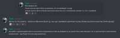
На фотографии нам автоматически открывалась третья часть шифра — Х16 (почему-то).
Ответ: Х16
ЧАСТЬ 4
Сразу скажу, что четвертую часть НИКТО не разгадал, но если по порядку, то:
На фотке было найдено столько зацепок, что просто охуеть, и все они оказались случайными и бессмысленными. Например:
1. Карта подземки без пометки тайника Стрелка (ебаные зумеры КМы об этом даже не задумались). Зачем тут карта? — Просто так.
2. Фото ЧАЭС именно 1986 года. Так никто и не понял, нахуя она тут нужна была. Нет бы отослаться к фотографии из сна Стрелка, но они же, блять, не в курсе про сны Стрелка.
3. Нож, воткнутый в листок, оказался просто ебаным ножом без всякой смысловой нагрузки. Зачем нож? — Просто так.
4. Все эти вещи, включая фотографию Призрака, никак не могли принадлежать любому из персонажей игры. Это просто нагромождение всего подряд. Зачем? — Просто так.
5. Все эти бумажки, кроме той, что под ножом, — опалены. Почему? Тоже просто так.
6. Координаты отеля на листе — "51.4067, 30.0588", а в реальности же координаты отеля "Полесье" — "51.406876, 30.058353". Им, блять, сложно было загуглить?
7. Почему на этой записке после "Стрелок" стоит вопросительный знак? Нахуя на записке, которую Болотный Доктор даёт Стрелку, писать "Стрелок?"? — Просто так.
8. Единственная записка из 5 листов имеет следы складывания — просто так.
18 февраля 2020 года шифр закончился.
Стоит сказать, что к этому моменту людей на сервере дискорда, где в основном и разгадывали шифр, стало чуть меньше, чем дохуя. Все спамили теориями и пытались как-то подвязать фотку. Но это же шифр от Гэ-эС-Цэ. Нахуя нам эта фотка, да? Да! Разгадать этот шифр, оказывается, возможно и без всего этого.
Один чел (который до сих пор ждёт компьютер за "разгадку", а сейчас уже январь 2021) решает вбить уже известные части вместо точек в 2.0.2.1., и делает он это в строке гугла. То есть вбивает 2350N2X161 и всё: гугл выдаёт ему сайт. Вот так и разгадали. А четвертую часть уже потом притянули за уши про цифры на приборе в тайнике стрелка. Сейчас сайт доступен по адресу 2350N2X161233.
Ответ: отсутствует
Главная претензия — абсолютно бессмысленные и несвязанные между собой части разгадки, отгадать которые без подсказок и рандома было невозможно (все три части были отгаданы на рандоме, а четвертая и вовсе не была отгадана).
Даже это можно было бы простить новоПЫСам, но то, что этот шифр лишь пустышка и абсолютно никак не связан с игрой — никак не простительно. В подарок за двухгодовую разгадку они дают шмотки. Это просто низко. Большинство из нормальных шарящих ребят до конца думали, что это ARG, которая завязана на S.T.A.L.K.E.R. 2, но всё оказалось совсем не так.
Про карты
Со временем здесь что-то будет. А пока только пикча
Про сайт НИИ
Со временем здесь что-то будет. А пока даже без пикчи